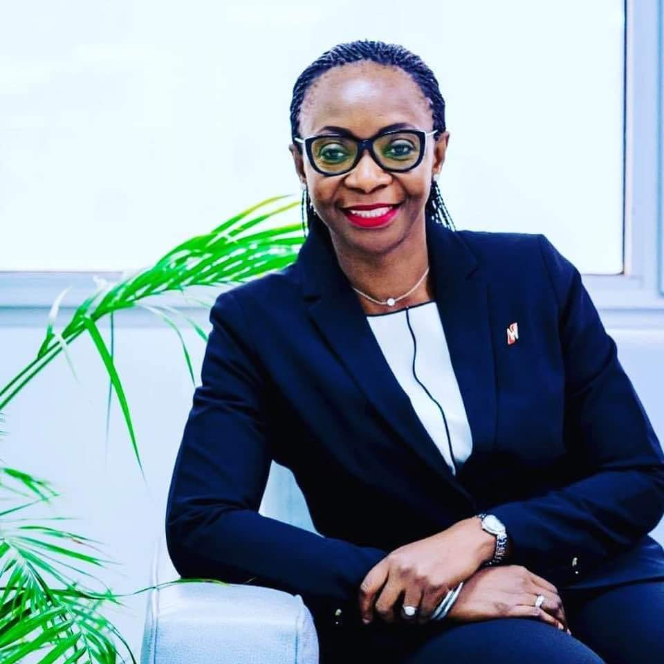

Noëllie Cécile Djimon Tiendrebeogo/Dandjinou est la première femme à occuper un poste de directrice générale dans le secteur bancaire au Burkina Faso.
Actuelle directrice générale de Ecobank Burkina, à force d’acharnement au travail, elle a, en quelques années, gravi quasiment toutes les marches de la profession bancaire pour se retrouver au top management.
Elle figure dans le top 50 africain 2021 des meilleurs dirigeants de banque. Portrait d’une amazone du monde de la banque finance.
